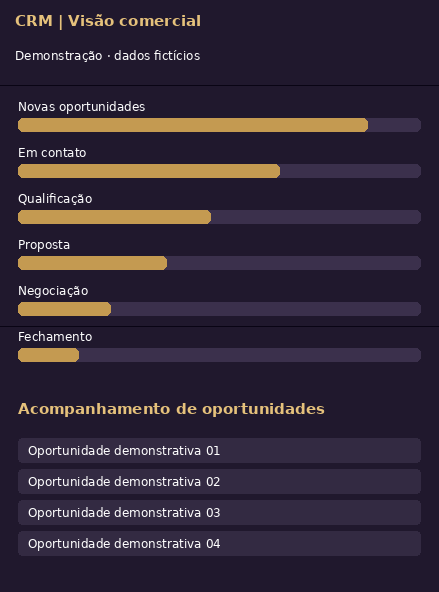
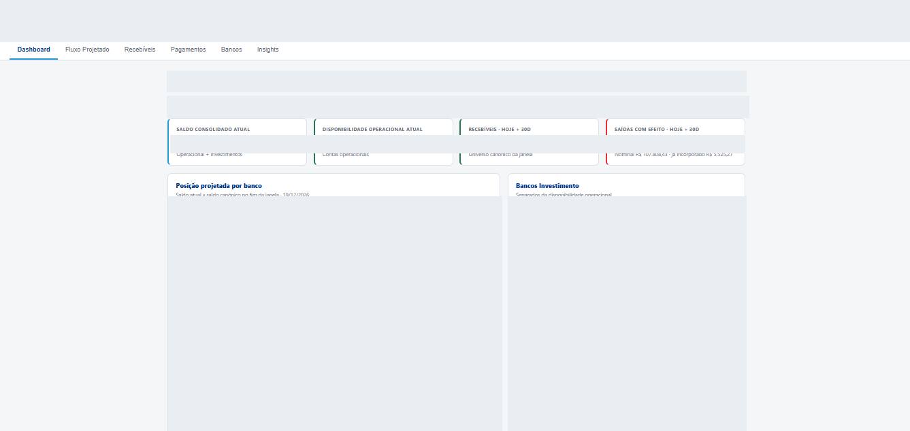
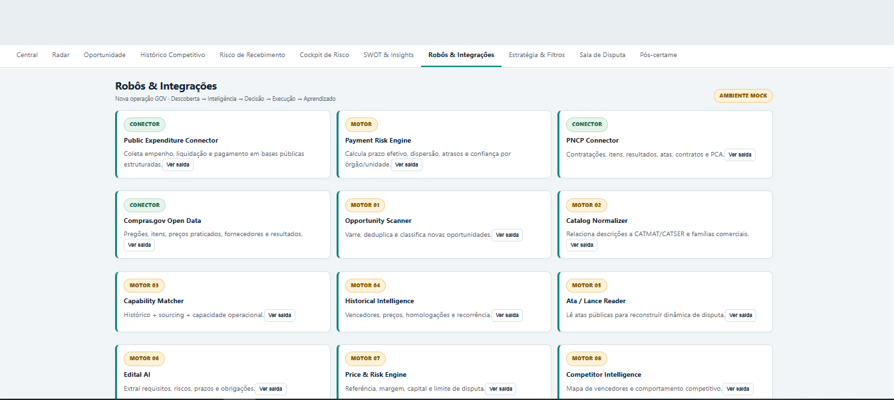
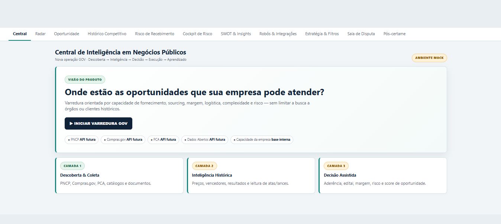
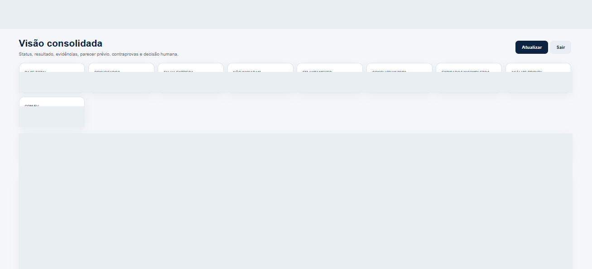
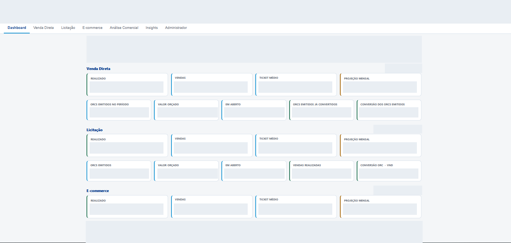

Severo Alves
Executivo de Crescimento Comercial
Negócios e Tecnologia Aplicada
Eu ajudo empresas a crescer de forma organizada, conectando gestão comercial, processos, dados, automação e inteligência artificial.
Experiência em negócios, execução comercial e desenvolvimento de soluções digitais para operações empresariais.
Competências que unem resultado, processo e execução
Conecto necessidades reais de negócio a soluções comerciais, operacionais e tecnológicas, com escopo claro, execução prática e acompanhamento.
Explore as áreas abaixo para conhecer aplicações, ferramentas e exemplos de interfaces. As imagens de projetos tiveram informações identificáveis e dados sensíveis ocultados.
Modelos de atuação
- Estruturação comercial, CRM e indicadores
- Dashboards gerenciais, BI e inteligência financeira
- Automação, integrações e IA aplicada
- Recrutamento, avaliação e análise de perfil
- Processos, licitações e presença digital

Demonstração recriada
Exemplo visual de painel comercial e acompanhamento operacional
01Comercial e CRM
+
Vendas, prospecção B2B, funil, atendimento, follow-up e acompanhamento de oportunidades.

Demonstração recriadaComercial e CRM
Vendas, prospecção B2B, funil, atendimento, follow-up e acompanhamento de oportunidades.
Estruturação da rotina comercial com foco em previsibilidade, leitura da operação, produtividade e melhora da conversão.
- Mapeamento da jornada comercial e do processo de vendas
- Implantação ou organização de funil, CRM e acompanhamento de carteira
- Cadências, follow-up, propostas e indicadores de desempenho

Interface com dados ocultos
Leitura gerencial e inteligência financeira
02Dashboards, BI e PIF
+
Dados para tomada de decisão por meio de painéis comerciais, gerenciais e financeiros.

Interface com dados ocultosDashboards, BI e PIF
Dados para tomada de decisão por meio de painéis comerciais, gerenciais e financeiros.
Transformação de dados em informação útil, com estrutura visual objetiva e indicadores orientados à decisão.
- Painéis de inteligência financeira, comercial e operacional
- KPIs, metas, projeções e leitura consolidada da operação
- Organização visual para gestores e rotinas de acompanhamento

Protótipo demonstrativo
Fluxos, motores, conectores e automações
03Automação e integrações
+
Processos inteligentes com integrações, APIs, sincronização de dados e redução de retrabalho.

Protótipo demonstrativoAutomação e integrações
Processos inteligentes com integrações, APIs, sincronização de dados e redução de retrabalho.
Desenho e desenvolvimento de fluxos com n8n, Make e APIs. O exemplo visual apresenta a arquitetura de conectores e motores de um protótipo de inteligência em negócios públicos.
- Automação com n8n e Make
- Integração entre formulários, planilhas, CRM, e-mail e APIs
- Alertas, validações, distribuição e documentação do fluxo

Protótipo demonstrativo
IA aplicada à descoberta, análise e decisão
04Inteligência artificial aplicada
+
Agentes, prompts, motores de análise e apoio à produtividade orientado a necessidades reais.

Protótipo demonstrativoInteligência artificial aplicada
Agentes, prompts, motores de análise e apoio à produtividade orientado a necessidades reais.
Uso de IA para acelerar processos, organizar conhecimento, apoiar análise e ampliar capacidade operacional.
- Desenvolvimento de agentes de IA e fluxos assistidos
- Engenharia de prompts e estruturação de instruções
- Aplicação prática em comercial, gestão, análise e produção de conteúdo

Interface com dados ocultos
Seleção, avaliação e análise de perfil
05Recrutamento, testes e análise de perfil
+
Seleção comercial, avaliação estruturada e apoio à decisão por evidências e critérios.

Interface com dados ocultosRecrutamento, testes e análise de perfil
Seleção comercial, avaliação estruturada e apoio à decisão por evidências e critérios.
Estruturação de processos seletivos e apoio à análise de perfil para contratações mais consistentes.
- Seleção comercial com etapas organizadas e critérios de avaliação
- Testes, perguntas estruturadas e leitura comportamental
- Motor de análise de perfil profissional baseado em evidências relacionadas à função, com revisão e decisão humana; sem diagnóstico psicológico ou classificação automática.
Protótipo demonstrativo
Processos estruturados, leitura de oportunidade e inteligência operacional
06Processos, licitações e inteligência operacional
+
Organização de rotinas, documentação, análise e uso de IA em processos mais estruturados.
Processos, licitações e inteligência operacional
Organização de rotinas, documentação, análise e uso de IA em processos mais estruturados.
Atuação voltada à organização operacional, documentação, inteligência aplicada e leitura de processos públicos ou privados.
- Radar de oportunidades e filtros de aderência à capacidade de fornecimento
- Leitura assistida de editais, prazos, requisitos e documentação
- Histórico competitivo, preços, atas e análise de risco de recebimento
- Protótipo GOV: conectores de fontes públicas previstos; integrações dependem de implementação e validação

Interface com dados ocultos
Interfaces, páginas e sistemas web orientados ao negócio
07Sites, sistemas web e presença digital
+
Desenvolvimento web, páginas profissionais, sistemas e fortalecimento da presença digital.

Interface com dados ocultosSites, sistemas web e presença digital
Desenvolvimento web, páginas profissionais, sistemas e fortalecimento da presença digital.
Construção e organização de presença digital para empresas que precisam comunicar melhor seu valor, apoiar captação e estruturar ambientes web úteis ao negócio.
- Sites institucionais, landing pages e ambientes internos
- Google Business Profile, SEO local e estruturação digital
- Conteúdo, apresentação e experiência orientada à conversão
Base profissional que sustenta a entrega
Vamos conversar sobre soluções e parcerias
Modelos de atuação: trabalho remoto CLT ou PJ, projetos sob demanda e parcerias especializadas.
Se a sua necessidade estiver ligada a uma das competências apresentadas, o caminho mais rápido é iniciar a conversa pelo WhatsApp ou e-mail.